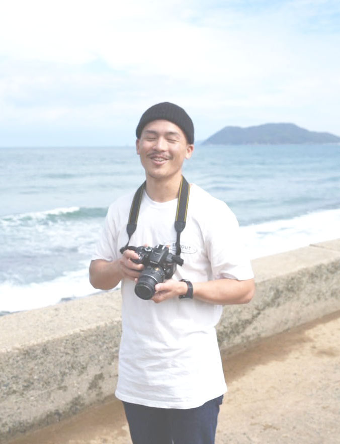

| 1995,12 | 千葉県館山市で５人兄弟の３番目の次男として生まれる。兄弟の中で生まれた時は一番 大きかった。（今は一番小さい。わら） |
|---|---|
| 1999,04 | 幼稚園の時に兄の影響でサッカーを始める。 |
| 2001,06 | 東京の目黒で小学校生活がスタートし初めての夏休みを楽しみにしていたが、 またまた転勤。しかも、はるか遠い鹿児島へ。またゼロからの友達作り。 |
| 2006,06 | 身長は同年代で一番小さかったのに、運動神経はいい方でサッカーも上手な 方だったのでガキ大将のように威張っていた。みんなとの中学校生活を楽しみ にしていた最中、またまた転勤。再び関東に出戻り。 |
| 2011,04 | 高校サッカー選手権の舞台に憧れ全国でも名門の流通経済大学附属柏高校に進み、 辛い辛い３年間の始まり。全国にはこんなにも上手い人がいるのかと驚いた。 |
| 2013,12 | 最後の大会で高校年代の日本一に輝く。（自分自身は試合に出ていないが） もちろん悔し気持ちもあるが、その代の一員としていれただけで幸せ。 この３年間は本当に濃い３年間であった。 |
| 2016,08 | 大学ももちろんサッカー選手という夢を捨てきれず東京国際大学という強豪に 入学しサッカーに明け暮れるはずであったが、高校とは全く環境が違く緩さが故に 練習にはしっかり行ってはいたが、友達との遊びであったりバイトに走る ような生活になっていた。 |
| 2017,01 | 就職活動をしていて面接や自分自身を分析していく中で、俺の人生ってサッカー しかなかったなと改めて気づき何故かそこで眠っていたサッカーへの熱意が戻って きてどうせなら海外に挑戦しようと思い、大学の先輩に話を伺いオーストラリアに いくことを決め、大学サッカー引退までサッカーも頑張りつつ、資金を稼ぐために 働きまくる。 |
| 2018,01 | 初めての海外、初めての一人暮らし、不安でいっぱいだった。オーストラリアに 行くと両親に伝えたのも出発の一週間前。笑 当時は海外にワーホリに行くなんて逃げだと思っていた。 |
| 2018,04 | 一日一日が刺激的で生きてる感じがして幸せな日々。 ホームシックにはならなかったが、辛いこと上手くいかないこともたくさんあったが サッカーチームも決まり、チームのオーナーの家に住ませてもらえることに。 |
| 2018,10 | 一年で帰る予定ではいたが、2年目も滞在するためにバナナファームにいき ３ヶ月働きもう一年滞在できるビザを取得する。 日本ではできない経験で楽しかった。 |
| 2020,03 | サッカーも生活も充実していて新しいチーム、新しいリーグでの試合が始まり、 ここからという時にCOVIDー19で中断、職も失う。 |
| 2020,04 | 州のボーダーが閉まる前日にQLDという違う州に職を求めお金を稼ぐため、 ３rdビザを取得するため移動する。なんとか州境を越えることに成功。 |
| 2021,02 | サッカーと同じくらい熱くなれるものに出会う。 人生に新し選択肢を見出してくれたCOFFEEに感謝。 |
| 2021,06 | 再びロックダウンになり、サッカーのシーズンが再び中断してしまう。2年連続。 |
| 2022,04 | 三度目の正直でやっとサッカーシーズンが開幕。毎年カテゴリーを上げていてオーストラリア 実質６部相当から始まったサッカーも今年は４部での闘い。 仕事もローカルのカフェでバリスタとしてコーヒーを淹れる日々。 |
| 2022,08 | リーグ戦を２位で終え来シーズン３部への昇格を果たした。 |
| 2022,10 | およそ3年ぶりに日本に帰国した。以前から怪我をしていた肩の手術を行う。 |
| 2023,01 | 再びオーストラリアに戻ってサッカーをするためにリハビリをし、資金稼ぎのために仕事をし 自分の理想とするライフスタイルを手にするためにWebデザイナーへ挑戦中。 |
ABOUT ME
Yuki Morikawa
森川 侑軌
| Age : 27 | Home town : Saitama |
|---|---|
| Born : 18,12,1995 | Residence : Australia |


オーストラリアでサッカー選手をしながら
cafeでcoffeeを淹れている。一度きりの人生
好きなことをしながら生きたい。
ゼロからのWeb デザイナーへの道。

PROFILE
５人兄弟の３番目の次男として千葉県で生まれる。
兄の影響で幼い頃にサッカーを始める。 自分の人生はサッカー一色と言っても過言ではない。 性格は真面目でコツコツやるタイプで表にはあまり出さないが かなりの負けず嫌い。
大学卒業後、普通に就職するんだろうなと思っていたが サッカー選手という夢を捨てきれずオーストラリアに渡豪。 プロサッカー選手という夢は叶えられていないが、人生の 価値観がガラリと変わった。これからの人生が楽しくて たまらない。やりたいこと、挑戦したいことが一杯。
兄の影響で幼い頃にサッカーを始める。 自分の人生はサッカー一色と言っても過言ではない。 性格は真面目でコツコツやるタイプで表にはあまり出さないが かなりの負けず嫌い。
大学卒業後、普通に就職するんだろうなと思っていたが サッカー選手という夢を捨てきれずオーストラリアに渡豪。 プロサッカー選手という夢は叶えられていないが、人生の 価値観がガラリと変わった。これからの人生が楽しくて たまらない。やりたいこと、挑戦したいことが一杯。